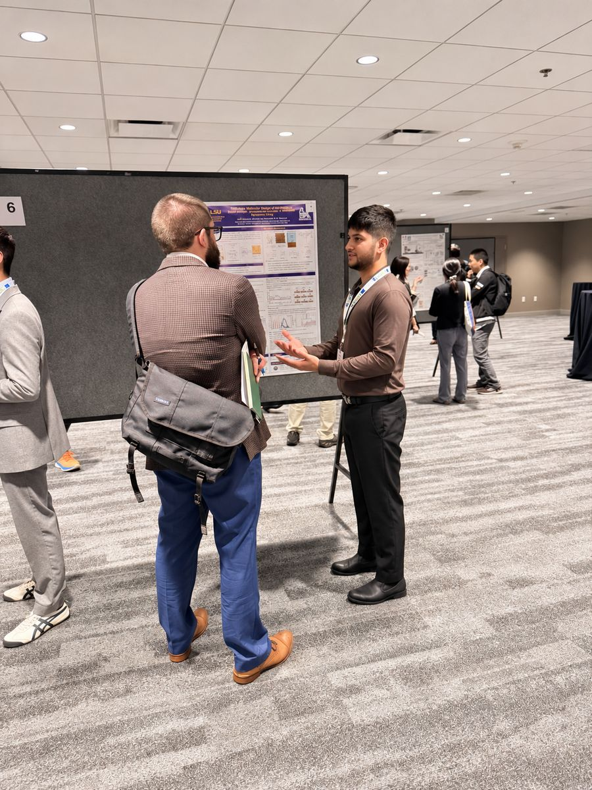

Research
I'm a graduate research assistant in Dr. Yen-Fang Su's group at LSU, and my work is on concrete materials. In the lab I mix, cast and test UHPC, including self-sensing mixes, and I help test mortars made for underwater 3D concrete printing: washout resistance, rheology, setting time and strength.
I also work with Dr. Yaxin An in Chemical Engineering on molecular dynamics simulations. I run them in LAMMPS on the LSU and LONI computing clusters to study how anti-washout admixtures and superplasticizers adsorb on C-S-H, the main binding phase in cement paste.
My M.S. thesis is titled Compatibility of Polymeric Admixtures in Underwater Concrete Additive Manufacturing: A Combined Molecular Dynamics and Experimental Study.


Publications
- Pasbani, M., Timilsina, S., Su, Y.-F., Okeil, A., An, Y., and Jeong, H. (2026). Characterization framework for underwater printable concrete: modified testing methods with environmental simulation. 2026 SEM Annual Conference and Exposition on Experimental and Applied Mechanics, Norfolk, VA, June 2026. Conference program
- Wang, T., Nag, S., Patel, R., Timilsina, S., Bharti, B., Su, Y.-F., and An, Y. (2025). Salt-responsive behaviors of PVBTACl, NaPSS, and their complex by molecular dynamics simulations and experiments. Soft Matter, 21(37), 7333–7343. doi.org/10.1039/D5SM00282F
In preparation
- Timilsina, S., An, Y., and Su, Y.-F. Molecular dynamics simulation of polymer–mineral interactions: a review.
- Timilsina, S., An, Y., and Su, Y.-F. Molecular dynamics study of polymer adsorption on calcium silicate hydrate.
Posters
- Toward the molecular design of anti-washout admixtures for underwater concrete: a molecular dynamics study. ACI Concrete Convention, Atlanta, GA, October 2026.
- Molecular dynamics study of polymer adsorption on calcium silicate hydrate. 14th Annual LSU Graduate Student Research Conference, 2026.



Service
Organizing committee, APTEC Gulf Coast Polymer Conference (May 2026 to present). More on the Leadership page.
Related course project: Sulfate ion transport in C-S-H nanopores.